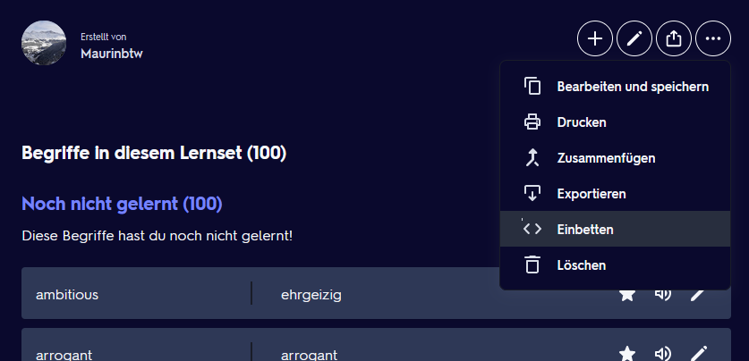
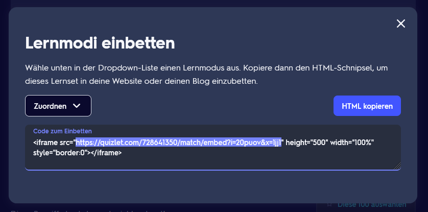

<div class="section">
  <div class="container">
    <div class="enterSection">
      <!-- <mat-form-field class="example-form-field">
        <mat-label>Quizlet Url</mat-label>
        <input matInput type="text" [(ngModel)]="value" />
      </mat-form-field> -->

      <mat-form-field class="example-full-width">
        <mat-label>Quizlet Url</mat-label>
        <input
          type="text"
          placeholder="Enter your Quizlet Url"
          aria-label="Quizlet Url"
          matInput
          [(ngModel)]="value"
          [matAutocomplete]="auto"
        />
        <mat-autocomplete #auto="matAutocomplete">
          <mat-option *ngFor="let option of options" [value]="option">
            {{ option }}
          </mat-option>
        </mat-autocomplete>
      </mat-form-field>

      <button mat-raised-button color="primary" (click)="learn()">
        Start learning!
      </button>
    </div>
    <div class="help">
      <mat-accordion>
        <mat-expansion-panel hideToggle>
          <mat-expansion-panel-header>
            <mat-panel-title>How do I get a Quizlet Url?</mat-panel-title>
          </mat-expansion-panel-header>

          <p>Visit <a href="https://quizlet.com">https://quizlet.com</a> You have to use the Webversion and not the App!!!</p>
          <p>
            Search for your desired learning set. Scroll to the three dots and
            choose embed.
          </p>
          
          <p>Copy the url and paste it into the text box above.</p>
          
        </mat-expansion-panel>
        <mat-expansion-panel hideToggle>
          <mat-expansion-panel-header>
            <mat-panel-title>Why do you need this?</mat-panel-title>
          </mat-expansion-panel-header>

          <p>
            Quizlet is a great tool for learning. However, it removed unlimited
            access to the learning mode for free users. This tool allows you to
            learn as much as you want for free.
          </p>
        </mat-expansion-panel>
        <mat-expansion-panel hideToggle>
          <mat-expansion-panel-header>
            <mat-panel-title>Settings</mat-panel-title>
          </mat-expansion-panel-header>

          <button mat-raised-button color="primary" (click)="clearPrevious()">
            Clear previous learning sets
          </button>
          
        </mat-expansion-panel>
      </mat-accordion>
    </div>
  </div>
</div>
